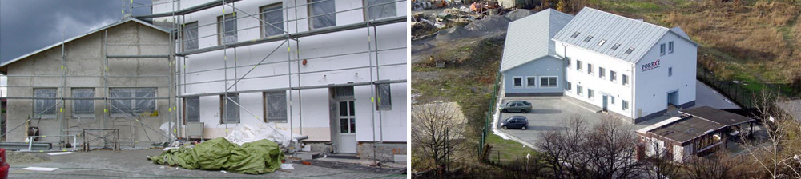

Generální dodávky inženýrských sítí, kotelen a rekonstrukcí staveb
Stavební firma JOROS s.r.o. zajišťuje komplexní realizaci veřejných, komerčních i bytových projektů. Vlastní kapacity, zkušení stavbyvedoucí, bezprašné technologie a certifikovaný systém managementu jakosti dle ISO 9001.
Prověřené stavební zázemí
Portfolio dokončených stavebních děl
Přehled významných zakázek realizovaných pro univerzity, statutární města, městské obvody, Českou poštu a průmyslové investory.
Specializované stavební činnosti
Disponujeme vlastními technickými kapacitami pro zajištění dílčích i generálních dodávek v nejvyšší kvalitě.
Inženýrské sítě & Přípojky
Výstavba dešťové a splaškové kanalizace včetně kamerových revizních zkoušek, vodovodní řady, nízkotlaké a středotlaké plynovody, zpevněné plochy, komunikace a parkoviště.
Kotelny, topení & plyn
Montáže moderních úsporných kotelen, tepelných čerpadel, ústředního vytápění, revize plynových zařízení TIČR, stavby a vložkování nových komínů.
Rekonstrukce a sanace budov
Kompletní modernizace bytového fondu, sanace předsazených balkónů, zateplování obvodových plášťů, výměny oken a registrace v programu Zelená úsporám.
Bezprašné elektroinstalace
Montáže silnoproudých i slaboproudých rozvodů moderním bezprašným frézováním s průmyslovým odsáváním, revize a odstraňování porevizních závad.
Projekční & inženýrská činnost
Zpracování kompletní projektové dokumentace pro stavební povolení, inženýring, koordinace se správci inženýrských sítí, autorský i technický dozor investora pro hladký průběh realizace.
Poptávkový stavební průvodce
Zvolte parametry plánovaného projektu. Náš systém připraví rekapitulaci a předvyplní formulář pro rychlou kalkulaci.
Tradice a zodpovědnost od roku 1993
Stavební firma JOROS s.r.o. byla založena v roce 2006 přímým navázáním na úspěšnou činnost stavební společnosti DEMO v.o.s., která na českém stavebním trhu působila již od roku 1993.
Zajišťujeme realizaci staveb vlastními kapacitami a kvalifikovaným personálem. Zakládáme si na dodržování platných technologických předpisů, bezpečnosti práce a solidním vystupování vůči investorům i nájemníkům dotčených objektů.

Identifikační a fakturační údaje
Poptávka realizace stavby
Kontaktujte naše stavbyvedoucí pro konzultaci vašeho projektu, nacenění výkazu výměr nebo osobní prohlídku stavby.
Přibylova 713/15, 719 00 Ostrava - Kunčice
+420 596 237 535 / +420 596 247 538
+420 603 446 171
joros@joros.cz